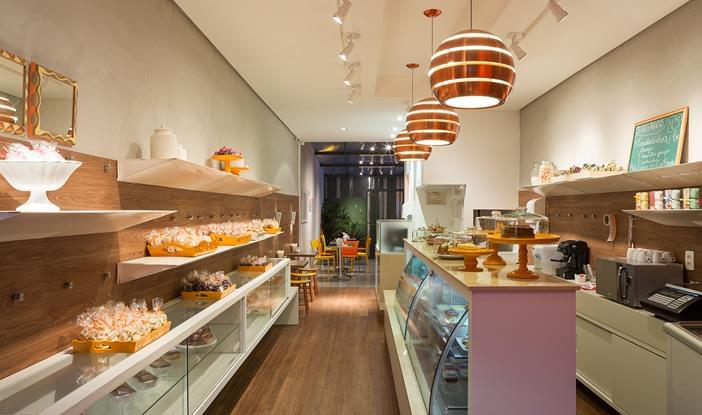

Sobre nós
Sweet Dessert
Fundada em 2009 a Confeitaria Sweet Dessert faz história no Rio Grande do Sul. A confeitaria é uma das mais respeitadas casas comerciais do estado. Uma mistura de objetos modernos com um toque de romantismo nos detalhes descrevem a loja, “Criamos um espaço de acordo com o pedido do cliente: um projeto funcional e elegante, com os produtos expostos e valorizados”, conta o arquiteto William Veras Ribeiro, do escritório VMF Arquitetos.
Chefs
Cedric Grolet - Chef
Aos 11 anos Cedric Grolet já empunhava com desenvoltura um fouet na mão. Trabalhava na cozinha do hotel de seus avós em São Paulo. Aos 13, ele se tornou um aprendiz de cozinha e aos 14, entrou na escola de confeitaria. A partir dos 15 começou a colecionar prêmios – incluindo o National Trophy for Sugar Art. Apaixonado pelo desenho, começou a tomar aulas de arte até aos 18 anos de idade. Aos 25 começou a trabalhar em nosso restaurante.
A chef Catarina Freire, 25 anos, logo percebeu que se sustentar sozinha não seria tarefa fácil. Decidiu, então, fazer bolo no pote, vender para os colegas da turma de direito e ganhar uma grana extra, com apenas 25 anos ela conseguiu dois restaurantes proprios e se juntou a nós em 2019.
Catarina Freire - Chef auxiliar